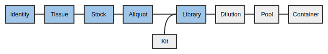
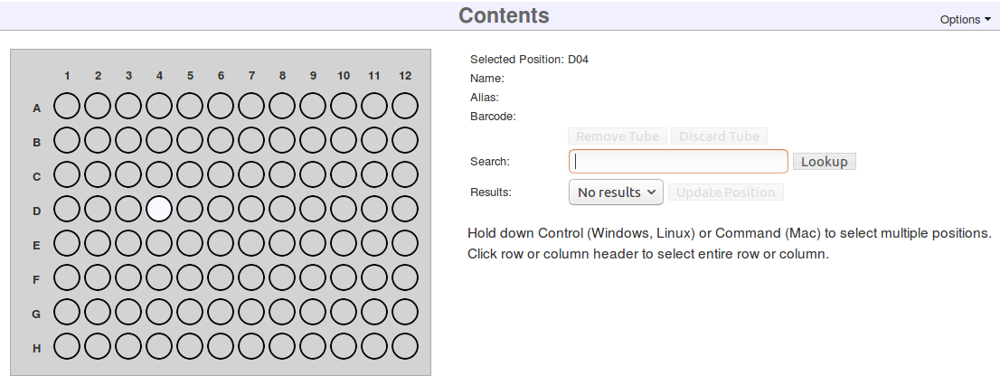
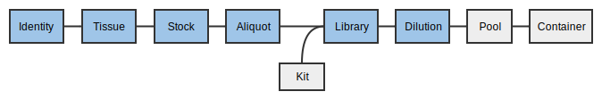
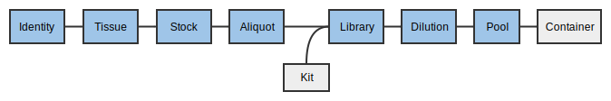

MISO
MISOLibraries tutorial
1. Logging in
Much like the old Geospiza LIMS, you need to log in to MISO LIMS in order to make changes to any LIMS entities. Logging in lets us record any changes you make and also allows us to set appropriate permissions.
If you were able to log in to Geospiza LIMS, you already have the correct
permissions and can proceed to logging in. If you are a new user, you will need
to contact helpdesk@oicr.on.ca so that they put you into the appropriate
Active Directory group, MISO_ROLE_INTERNAL.
Try to log in now:
- Click on http://miso.gsi.oicr.on.ca.
- Enter your username (e.g. jdoe) and password and click the Login button. MISO uses the same username and password as your OICR email account.
If all goes well, you should see the MISO Dashboard and see a message at the top right: "Logged in as: jdoe".
2. Propagating aliquots to libraries
A library is made from one sample for a single target platform and has a specific design associated with it that decides the selection and strategies used to make the library. A library may also have indices (primers) and QC information.

MISO stores two important pieces of information about how a library was generated: the selection (e.g., PCR, cDNA) and the strategy (e.g., WGS, WXS, amplicon). A design captures both a selection and strategy and the list of allowed designs is limited based on the sample type (e.g., a cDNA sample can only have SM, WT, or MR library designs and these lock the selection and strategy type accordingly).
2.0 Scan aliquots into your inbox
First, we accept the aliquots made by the samples team and put them into your inbox.
Boxes hold samples, libraries, and pools. They do not track reagents or primers. Boxes are separated into uses for different kinds of storage (e.g., tissue samples versus extracted DNA), but there is no check that items in a box match. Each box also has a size that includes the physical dimensions of the box as well as whether the box is compatible with the VisionMate scanner. Every position in the box is identified by a standard row letter + column number format (e.g., C05).
In this exercise, we are going to take tissues/samples/libraries from the previous team/collaborator by scanning them out of the previous box and into a newly created 'inbox'.
First, create a new box. This box will be your 'inbox'.
- From the navigation panel, choose Boxes and then Add Box.
- On the Create Box page, enter the information:
- Alias: A short name for the box. Record this name in your worksheet.
- Description: a human description of the box purpose “gDNA ready for
library prep for
”. - Use: The contents of the box. Select an appropriate use for your entities.
- Size: Select
8 x 12 scannable. - Click Save.
Upon clicking save, a graphic of the box will appear.

You can now fill the box with the tissues, stocks, aliquots, libraries, or pools that were made in previous steps. Collect the appropriate matrix tubes/barcodes now.
- Click on a position in the displayed Contents grid.
- Enter a matrix barcode into the box on the right and click Lookup.
- Click Update Position.
- ⚠ The Save button at the top of the page does not work for individual positions, only for Box Information.
- Repeat for as many samples/libraries/pools as you want.
The table below the box diagram shows the position and information for the currently selected sample. If you would like to see all of the samples in the table, click the List all Box Contents button at the top right of the table.
In the lab, it is possible to use Options > Scan Box to use the plate scanner and update all positions at once, but that will not be covered in this tutorial.
Using Boxes
Boxes can be found either from the Sample or Library page or the Boxes page.
- On the Sample page, search for one of your sample or library aliases and click on the alias to load the page.
- The Box and position is listed under Location near the top of the Sample
Information section. Click on the link to go to the Box (e.g.
PROJ_OUTBOX, A03).
Boxes can be used to store Samples, Libraries and Pools and one box can store all three types.
2.1 Bulk propagate aliquots into libraries
In this section, you will use the aliquots created already and create libraries.
- On the Samples page, enter your project name into the search box.
- Check the gDNA aliquot samples to turn into libraries. These samples are the
ones that end in
_D_1:PROJ_0001_Br_P_nn_1-1_D_1PROJ_0001_Ly_R_nn_1-1_D_1PROJ_0002_Br_P_nn_1-1_D_1PROJ_0002_Ly_R_nn_1-1_D_1
- From the Bulk actions drop down, select Propagate (library) selected.
- A table will appear. Enter the library information:
- Library Alias: The sample alias up to the tissue type (R or P), library
type, insert size, library design (e.g.,
DI4S_0001_Br_P_PE_318_WG). For more information about Library nomenclature, see Library Nomenclature. ⚠ This alias does not automatically fill in yet, so it must be entered: PROJ_0001_Br_P_PE_300_EXPROJ_0001_Ly_R_PE_300_EXPROJ_0002_Br_P_PE_300_EXPROJ_0002_Ly_R_PE_300_EX- Matrix Barcode: As before, usually this would be scanned by the hand
scanner. In this tutorial, enter matrix barcodes in the form (Short
name)_(Tissue type)(Individual)_Li, e.g.
PROJ_P1_Li. - Description: Library (Tissue type)(individual), e.g.
Library P1 - Design: EX
- Platform: Illumina
- Type: Paired End
- Index Kit: Nextera Dual Index
- Index 1 and Index 2: Select any combination of indices you wish. Select different indices for each library. Selecting the same index for two different libraries will make you unable to pool those two libraries together later.
- Volume: 100
- Kit: KAPA Hyper Prep
- Library Alias: The sample alias up to the tissue type (R or P), library
type, insert size, library design (e.g.,
- Choose Save.
Note that for dual-index libraries, only the first index needs to be specified. The second is optional.
3. Quality control
There are three way to indicate library quality in MISO: 1) Enter quantitative QC values under the Library QC section; 2) The overall pre-sequencing quality flag QC passed; and 3) The post-sequencing quality control Low quality library.
3.1 Library QC
After measuring the insert size or concentration, this information can be entered into each library. There is no bulk entry for this information yet, it must be entered for each library.
- From the Libraries page, find the
PROJ_0001_Br_P_PE_300_EXlibrary using the search box and click the sample link. - On the right side of the QCs heading, select Options → Add Library QC.
- Enter the information in the row:
- QC Date: Select a date.
- Method: Choose a QC instrument.
- Results: Enter the measurement.
- Insert Size: Enter the measured insert size.
- Click Add.
3.2 QC passed
QC Passed is a simple pass/fail flag for a library to decide if it is good enough for sequencing. If not measured, this can be left as "Unknown".
- From the Libraries page, find the
PROJ_0001_Br_P_PE_300_EXlibrary using the search box and click the sample link. - Change QC passed from Unknown to True.
- Click Save.
3.3 Low Quality Sequencing
Libraries can be marked as having low sequencing quality, which will be shown after the Run exercises.
4. Scanning libraries into your outbox
Scan the libraries you just created into the outbox for the sequencing team to use.
Finally, update the TUTORIAL_OUTBOX with your samples/libraries/pools to pass them on to the next team or to put them into storage.
Removing and discarding tubes
When you have a position selected, you can also either remove the tube from the box (setting its location to "Unknown") or discard the tube, meaning it has been used up. Discarding the tube sets the volume of the sample to 0 and marks it as "discarded",and removes it from its box.
- Click on one of the positions in the box with a tube. The position, alias, and barcode will appear to the right or below the box graphic. Right-click on the alias and pick "Open in new tab" to load the details page.
- Go back to the Box page in the other tab. Make sure the tube is still selected in the Box and click Discard Tube. Click "OK" in the pop-up.
- Go to the other tab with the Details page and click the browser refresh button. The Location field will show as blank, Volume will be set to 0.0, and the Discarded box will be ticked.
Moving items around in boxes
An item can only exist in one box. If assigned to a new box, it will disappear from the original.
- In the current tab, go to the Boxes page, find the TUTORIAL_OUTBOX box. This box was previously created by the MISO developers for the tutorial.
- Choose an empty position and enter one of your barcodes.
- Click Lookup and Update Position.
- Go back to your own Box and refresh the page. The sample was removed.
- Repeat this process for the rest of the samples/libraries that you are transferring to the next team.
5. Propagating libraries to dilutions
A library cannot be directly loaded into a lane in a sequencing container (flowcell/SMRTcell) in MISO. A dilution must be made and then many dilutions (or just one) can be mixed into a pool for sequencing.
Orders are requests for sequencing pools a certain number of times. They are used to keep track of sequencing progress for project management and book-keeping.
5.1 Bulk creating Library Dilutions
Dilutions can be made in bulk from libraries.

In this exercise, we will create 4 library dilutions from the libraries we made previously.
- On the Libraries page, check all the libraries just created.
PROJ_0001_Br_P_PE_300_EXPROJ_0001_Ly_R_PE_300_EXPROJ_0002_Br_P_PE_300_EXPROJ_0002_Ly_R_PE_300_EX
- From the Bulk actions drop down, select Make dilutions from selected and click Go.
- Enter the concentrations of the dilutions (use any number you wish).
- Click Save.
Dilutions are a bit ephemeral in MISO: there is no list for all the dilutions. To see the dilutions for a library, view the library page. At present, Dilutions cannot be saved in Boxes.
6. Creating Pools
Pools are the last step for libraries before sequencing and represent the entity that is loaded onto the flowcell lane or SMRTcell. A "pool" can have one or more library dilutions in it. They are equivalent to "worksets" in Geospiza, but are required for every lane of sequencing.

Here we will all all of the dilutions we added previously to make a single pool of 4.
- On the Pools page, under the Illumina tab, select Options → Add Pool.
- Enter the Pool Information:
- Alias: A short description of the pool contents. Enter the project name
followed by
_POOL(e.g.PROJ_POOL) - Description: A longer free-text description of the pool.
- Platform Type: Leave
Illuminaselected. - Desired Concentration: Enter a concentration.
- Creation Date: Select a date.
- Ready to Run: Whether or not the pool is ready for sequencing. This flag is used together with the Order to show the pool is ready to be sequenced. Tick this box.
- Volume: Enter a pool volume.
- Click Save.
- In the Pooled Elements section, use the search box to find the dilutions created previously.
- For each dilution, press the + button to add the dilution to the pool.
7. Ordering sequencing
Orders are created on the pool to be sequenced, and include the quantity of sequencing required (counted in lanes/SMRT cells), and the sequencing chemistry required (on Illumina).
- On the Edit Pool page for the pool you just created, scroll down to the Orders heading.
- Click Add Order:
- Fill in the new order box:
- Partitions: the number of lanes/cells that should run for this pool. Enter
2 - Platform: Select the instrument for sequencing.
Illumina - Illumina HiSeq 2500 - Sequencing Parameters: Select
v4 2×126chemistry.
- Partitions: the number of lanes/cells that should run for this pool. Enter
- Click Save. The order will now be visible in the Orders section.
7.1 Checking for unfulfilled orders
The Orders page is used to decide what needs to be sequenced.
- From the navigation menu, choose Orders.
- Verify that the pool you just created is listed in the Unfulfilled tab.
Columns on this page will disappear if there are no entries (e.g., the Failed column will not be shown if there are no failed runs). When enough lanes have been sequenced, the row will disappear from the Unfulfilled tab, but remain in the All tab. Lanes currently being sequenced will be marked as in-progress and remain on the Unfulfilled tab until the run transitions to Completed.
A pool can have many orders. Orders for the same platform and chemistry are summed when displayed on this page.
Troubleshooting
How do I correct an index on a library?
The index can be changed on either the individual library page or the bulk edit page.
- From Tracking, Library, select the library that needs to be changed.
- If necessary, change Index Family. If selected, the indices will be erased.
- Select the correct index under Indices. If the index family supports dual barcoding, another drop down will appear.
What if I assign a library to the wrong parent aliquot?
Please email gsi@oicr.on.ca or file a JIRA ticket in GSI Common to get assistance from the MISO team.
What if I forget to put a library dilution in a pool?
If the library dilution has not been created:
- From Tracking, Library, select the library that needs to be added.
- In the Library Dilution section, hover over Options and select Add Library Dilution.
- Fill out the new row in the table, then click Add.
Once the dilution exists:
- From Tracking, Pool, select the pool that needs the additional library dilution.
- In the Pool Elements section, find the second table, labelled Select poolable elements.
- Enter the library name, library alias, or dilution name in the Search box.
- Find the correct dilution in the list and click the plus button beside it.
How do I change the targeted sequencing type on a library?
Targeted sequencing is connected to the dilution since the same library can be used for multiple targeted sequencing panels.
- From Tracking, Library, select the library that needs to be changed.
- In the Library Dilution section, under the Edit column, click the pencil beside the dilution that needs to be changed.
- Select a new Targeted Sequencing from the list.
- Under the Edit column, click Save.
How can I add a new targeted sequencing type, kit, or anything else in drop-down menus?
For targeted sequencing and indices, please email gsi@oicr.on.ca or file a JIRA ticket in GSI Common to get assistance from the MISO team.
Kits can be added easily:
- From Tracking, Kits, select the type of kit you want to add.
- Click Create Kit Descriptor.
- Fill in the form. The Stock Level is not currently used, so leave it at zero.
- Carefully select the Kit Type and Platform. This will determine what the kit can be used for.
- Click Save.
How do I make bulk orders?
Alas, this is not possible yet.
How are matrix tube barcodes assigned to tubes?
Barcodes can be assigned on an individual edit page or in bulk.
To change a single library:
- From Tracking, Library, select the library that needs to be changed.
- In the top right, you will see a box labelled Barcode.
- Hover over the down arrow and select Update Barcode.
- Scan the barcode.
- Click Save.
To change many libraries:
- From Tracking, Library, check the box beside each library that needs to be changed.
- From Bulk actions, choose Update selected and click Go.
- Select the cell in the Matrix Barcode column for the library and scan the barcode.
- Repeat for all the libraries.
- Click Save.
What is the importance of selecting a study since it prevents the sequencing stage from adding pools to the lane containers?
The study is important for submitting to the ERA. Although we are not using that feature of MISO, it's required that all projects have at least one study and that it is required when adding a pool to a lane.
| < Samples tutorial | Home | Sequencing tutorial > |